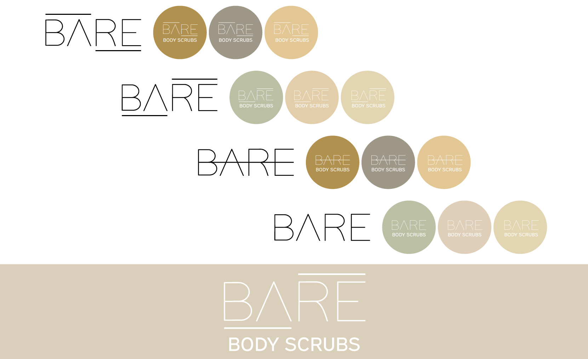

Bare Body Scrubs
Logo Design
Bare Body Scrubs is a small beauty supply company based in Hamilton, Ontario. The founders were seeking a logo to represent their brand. A simple sans-serif font on a nude background was developed after some iterations and client feedback. Visualizations of the logo on mockup products were also provided.
